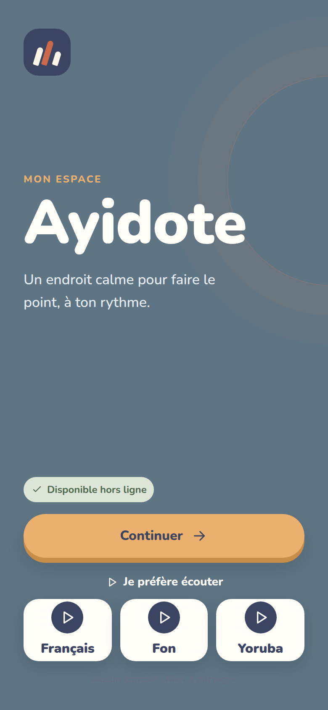

HACK4HER 2026
Reconnaître les pièges.
Entraîner ses réflexes.
Ayidote
Des histoires et des jeux pour apprendre à se protéger, ensemble et à son rythme.
Défi 4 · Hygiène numériqueÉquipe Ayidote · Epitech Bénin
Idvaresse · Aichath · Shanya · Christelle · Imane
